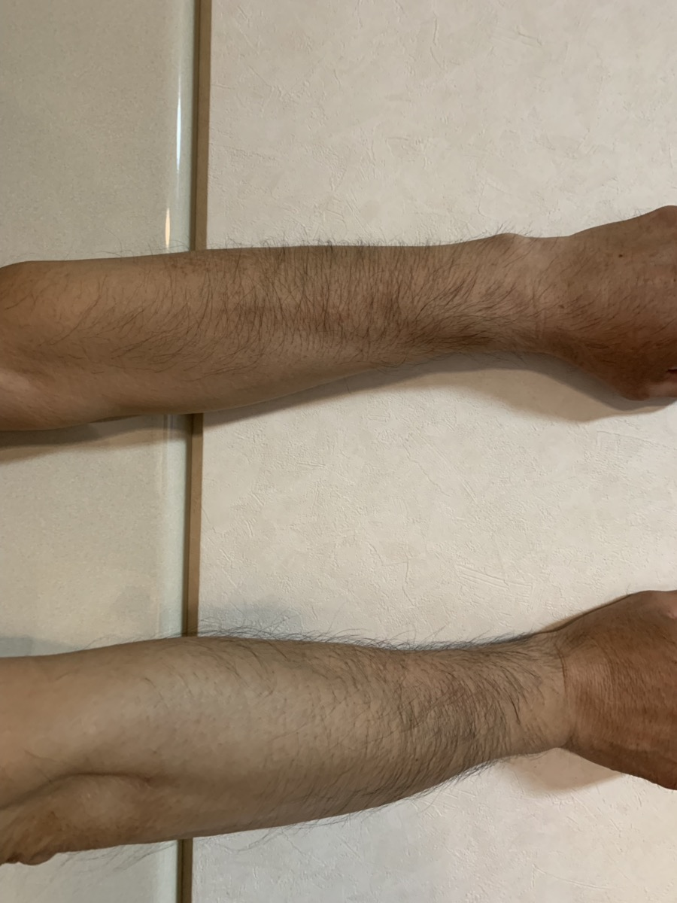
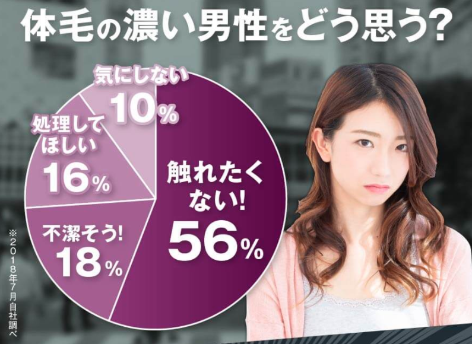

【新事実】
初対面の女性は男性の〇〇の〇を見ていた！
夏はイベントの季節！
外に出かけることが増えて、
女の子との出会いも増えますよね。
女性が初対面の男性と出会ったとき、
どこを見ているか知っていますか？
最近、女友達に聞いてみたところ
「腕の毛を見ている」と言っていて、なるほど！と思いました。

なぜ腕の毛を見るのかと聞くと
「清潔感がある男性が好きだから」
と言っていました。
みなさんも、
「女性は清潔感を大事にしている」
という話は聞いたことがあると思います。

では、清潔感とは実際にどういうことなのでしょうか。
清潔感とは、他人を不快にさせないということです。
つまり、
・シワや毛玉のない服を着る ・ヒゲを剃る ・香水をつける ・くつの汚れをなくす ・うでの毛をケアする ・スネの毛をケアする
といった行動で清潔感をアピールできるのです。
ムダ毛のケアは見落としがちではないですか？
見落としている人が多いからこそ、
ムダ毛のケアをすれば
周りの男友達より一歩リードできます♪

腕やスネのムダ毛を
キレイにケアできる除毛クリームが
期間限定で半額なので、
女の子との出会いを大切にしたい！
と思っている男性は
下のボタンから詳細をチェックしてみてください！